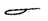
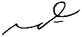
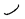
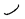

Chapter
II
Diphthongs
6. Since j
is the consonantal form of i, it is written by the small
circle.
| juna |
|
|
jupo |
|
|
jolo |
|
|
| juro |
|
|
juvelo |
|
|
juĝi |
|
|
7. At the
beginning of words, je is written by a small loop and ja
by a large loop.
| je |
|
|
ja |
|
|
jaro |
|
|
| jen |
 |
|
jam |
|
|
jako |
|
|
8. If it should
be absolutely essential to distinguish between i and j,
it is done by placing a small breve underneath the j.
9. Aŭ
is written as it sounds. Eŭ is expressed
with a dot under the e to distinguish it from i.
| aŭ | |
eŭ |
|
| laŭ |
|
Eŭropo |
|
| raŭka |
|
eŭgeniko |
|
10. As a word
ending, aŭ may be omitted.
11. When the
vowel u comes immediately before another vowel, it can
be expressed by a horizontal dash under the vowel.
| dua |
|
trotuaro |
 |
| Zuavo |
|
nuanco |
|
12. Ia
and ea are expressed by a dot within the large circle.
13. In word
endings the dot is omitted.
14. Ie
is expressed by a dash under the small circle.
| ie |
|
|
ĉie |
|
|
mielo |
|
|
| mieno |
|
|
fiera |
|
|
biero |
|
|
15. The combination
aj is expressed by the broken circle.
16. The combinations
aje and ajo are expressed by joining the small
and the large circles.
| krajono |
|
kajero |
|
| najado |
|
majoliko |
|
This sign is also used for the infrequent
combinations ae and ai.
17. At the
beginning of a word, a before another vowel is expressed
by a dot.
18. When the
combination ej is followed by a consonant, it is sufficient
to write the small circle.
19. When a
vowel follows it (in a few uncommon words), ej may be written
the same as aj and distinguished by a dot.
20. Other
vowel combinations are formed by the simple joining of the signs.
| boato |
|
|
tieulo |
|
|
balaos |
|
|
| fojno |
|
|
foiro |
|
|
naŭope |
|
|
21. The plural
ending oj is written by the stroke  or 
(up), care being taken to join this sign in accordance with the
principles of uniform movement.
or 
(up), care being taken to join this sign in accordance with the
principles of uniform movement.
| haroj |
|
|
floroj |
|
|
ratoj |
|
|
| pecoj |
|
|
homoj |
|
|
ludoj |
|
|
22. This ending
may be used (when necessary) to form the plural of adjectival wordsigns.
When they are accompanied by a noun, it will not be necessary, as
a rule, to express the plural of adjectives.
| bela |
|
belaj |
|
| bona |
|
bonaj |
|
| belaj floroj |

|
|
|
- Previous Page - Next
Page -
- Printer-Friendly
Version - |